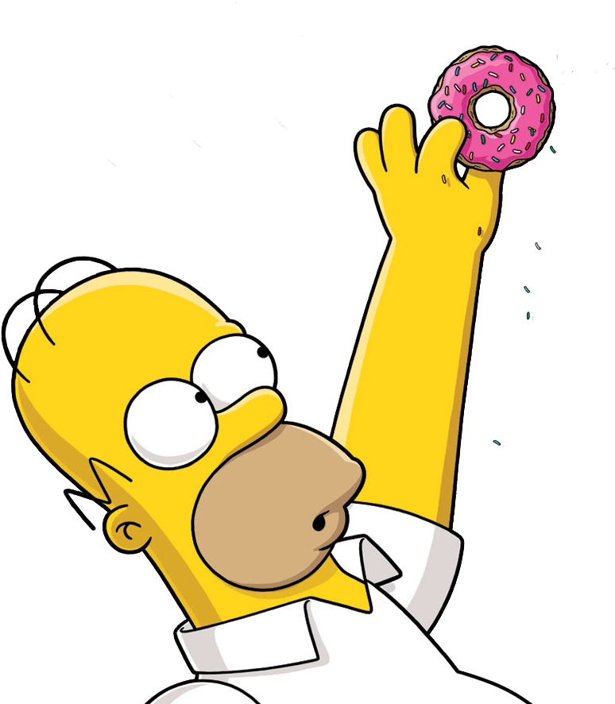

Homero J. Simpson es uno de los personajes principales de la serie animada. Representa el estereotipo del ciudadano promedio estadounidense: descuidado, con poco interés intelectual, pero profundamente devoto a su familia (a pesar de sus constantes errores).

A lo largo de las temporadas, se registran varias de sus líneas más icónicas: